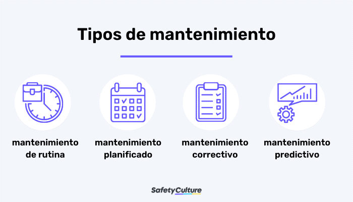

INTRODUCCIÓN.
El mantenimiento se refiere a los procesos llevados a cabo para preservar, reparar o mejorar el funcionamiento de un objeto, sistema o infraestructura. A continuación, se describen los tipos de mantenimiento y lo necesario para realizarlos.
¿QUÉ ES EL MANTENIMIENTO?
El mantenimiento, en otras palabras, consiste en la realización de una serie de actividades, como reparaciones y actualizaciones, que permiten que el paso del tiempo no afecte al rendimiento de un bien de capital, propiedad de la empresa. La realización de un correcto mantenimiento es necesario en todas las actividades económicas, además de que exige un serie de gastos por parte de la organización. El mantenimiento es necesario para evitar fallos en el proceso productivo que generen mayores costes.
TIPOS DE MANTENIMIENTO
1-Mantenimiento Correctivo:
El mantenimiento correctivo consiste en una serie de acciones dirigidas a reparar daños o fallos detectados en la maquinaria o los equipos que se usan en una empresa. Ante cualquier necesidad de reemplazo de piezas o de algún tipo de reparación, se aplican unas tareas técnicas para solventar esos problemas. Esas reparaciones se aplican en el día a día, conforme se van dando las averías a lo largo del proceso productivo. Por tanto, su meta es restaurar la fiabilidad del sistema sin perder la esencia original.
¿Cómo se lleva a cabo?
1.Detección del problema: Identificar el daño o fallo en el equipo.
2.Diagnóstico: Determinar el origen del fallo mediante análisis y pruebas.
3.Planificación de la intervención: Organizar los recursos necesarios para comenzar la reparación.
4.Intervención y reparación: Realizar las acciones necesarias para corregir el problema y restaurar el equipo.
5.Pruebas y verificación: Verificar que el equipo ha sido reparado correctamente y que funciona con normalidad.
6.Registro y seguimiento: Documentar todas las actividades realizadas durante el mantenimiento correctivo para análisis y mejora continua.
7. Análisis de Causa Raíz (Opcional): Realizar un análisis de causa raíz opcional después de una falla puede proporcionar información valiosa para prevenir problemas similares en el futuro.
El mantenimiento preventivo es un enfoque estratégico centrado en tareas periódicas de mantenimiento para evitar averías en los equipos y prolongar la vida útil de los activos. Este método proactivo implica inspecciones, ajustes y reparaciones programadas para garantizar un rendimiento y una fiabilidad óptimos de la maquinaria, minimiza el tiempo de inactividad imprevisto al anticipar y abordar los posibles problemas antes de que se agraven. Maximiza la eficiencia, sirviendo como práctica para los profesionales del mantenimiento que buscan mantener unos estándares operativos consistentes.
¿Cómo se lleva a cabo?
1. Realiza el diagnóstico de los equipos: Consolidar la totalidad de los datos obtenidos de las inspecciones, las condiciones de las herramientas, los registros de mantenimiento correctivo y la información relativa a la vida útil de los equipos.
2. Examina el material recopilado: Es crucial comprender las razones detrás de estos eventos, permitiendo la identificación de estándares en el uso, así como prácticas relacionadas con la conservación, almacenamiento e higienización de la maquinaria.
3. Elabora un plan de mantenimiento preventivo: En esta etapa se debe revisar y prever las tareas que requieren el uso de cada herramienta, para identificar puntos de mejora y optimización. Dicho de otro modo, el objetivo de conservarlas durante el mayor tiempo posible.
4. Registra todas las acciones: Esto permite evaluar si las acciones implementadas han efectivamente reducido las fallas, los costos y la necesidad de reparaciones.
Es una estrategia de mantenimiento cuyo objetivo es determinar la causa raíz de los fallos de los equipos para corregirlos antes de que causen más problemas y provoquen averías en las máquinas.
¿Cómo se lleva a cabo?
1. Enfoque preventivo: Se implementan medidas preventivas y se siguen protocolos de mantenimiento planificados.
2. Planificación sistemática: Esto implica definir los intervalos de mantenimiento, asignar los recursos necesarios y llevar a cabo las actividades de acuerdo con un cronograma preestablecido.
3. Monitoreo continuo: Esto permite obtener información en tiempo real sobre el rendimiento de los equipos y detectar posibles desviaciones o anomalías.
4. Optimización continua: Se busca mejorar constantemente los procesos de mantenimiento y aumentar la eficiencia operativa.
Se centra en la detección temprana de problemas y la corrección antes de que se agraven.
¿Cómo se lleva a cabo?
Como ya sugiere el nombre, las pruebas de detección de fallas tienen como objetivo buscar y averiguar si algo interno, dentro del equipo, no funciona en absoluto. Es decir, si una máquina en particular no presenta ningún defecto grave, pero tiene un pequeño retraso en el rendimiento. Por tanto, la empresa debe instalar equipos o dispositivos que actúen de acuerdo a vibraciones, temperatura, corriente, presión, entre otros.
Algunos ejemplos:
-Controlador lógico programable;
-Pruebas de detectores de humo;
-Prueba de dispositivo de seguridad;
-Panel de sinalizacion de alarmas;
-Prueba de detectores de gas;
-Computador supervisório;
-Prueba de caída de presión en compresores.
1-Preventivo y correctivo.
En el video se explican mantenimientos dirigidos a computadoras; preventivo y correctivo. Siendo que en primero se centra en el software y el hardware; dentro del software plantea acciones periódicas a realizar como lo serian; las cuentas del usuario, los discos de almacenamiento, el sistema operativo y el antivirus. En cambio el mantenimiento dedicado al hardware en la limpieza y la conexión de los periféricos del pc. Sobre el mantenimiento correctivo este se lleva a cabo después de que alguno de los compontes presente una falla que requiera mantenimiento o en su defecto el cambio de algún componente que comprometa a otros.
2-Predictivo y proactivo
En esta ocasión lo que se nos muestras son pasos a seguir para un mantenimiento predictivo dedicado al software del pc, como seria el checar que las licencias de el sistema operativo, así como el Office se encuentren activas. La desinstalación de programas que ya no se estén ocupando o que no sean usadas con la frecuencia que se debería y que solo ocupan espacio en el disco duro así como también a eliminar cualquier archivo de forma permanente que se encuentre en la papelera de reciclaje. Así también a deshabilitar programas que estén activos en segundo plano y que no son estrictamente necesarios y que solo ralentizan el dispositivo. Los mantenimientos predictivo y proactivo están ligados el uno con el otro, ya que ambos tienen el mismo fin que seria el identificar y corregir de las causas que es mas probable que lleguen a originar los fallos en los equipos o maquinaria.
3-Detectivo
En el video se explica la importancia de este tipo de mantenimiento ya que puede ayudar a el equipo si se detectan las alarmas a tiempo, algunos de estos paso son; la revisión de patrones de acceso: que puede definirse como la hora, fecha, el usuario o la ip de la o las personas que tienen acceso al dispositivo y en caso de no cuadrar con alguno saber actuar de la manera adecuada. En general este tipo de mantenimiento se centra más en detectar patrones inusuales en alguno de los dispositivos usados, como mensajes no enviados, archivos que no se recuera haber descargado o eliminado, así como también un funcionamiento inusual de nuestro sistema, como sobre calentamiento con tareas sencillas.
CONCLUSION
En conclusión, el mantenimiento en los dispositivos de uso personal así como en el uso laboral puede ser tanto beneficioso para una empresa así como a nuestro bolcillo, ya que si se tiene un manetnimiento constante se puede llegar a evitar un gran gasto en un futuro.
BIBLIOGRAFIA
Que es mantenimiento - Mantenimiento. (s.f.). Mantenimiento. Mantenimiento correctivo: qué es, tipos y ventajas. (s.f.). Ekon Toyos, S. (2021, 8 de junio). Pasos para realizar un Mantenimiento Correctivo de forma efectiva. Obtén el control absoluto de tu gestión del mantenimiento. ¿Qué es el mantenimiento preventivo? Significado, ejemplos, ventajas. (s.f.). eMaint. Mantenimiento preventivo: todo lo que necesitas saber. (s.f.). Blog | Checklist Fácil. Qué es el mantenimiento proactivo y cómo aplicarlo | SafetyCulture. (s.f.). SafetyCulture.